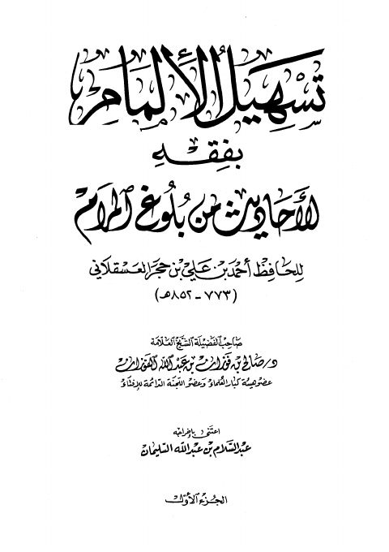

Downloads need an internet connection.
تسهيل الإلمام بفقه الأحاديث من بلوغ المرام
Authors: صالح بن فوزان الفوزان أحمد بن علي بن حجر العسقلاني
Editors: عبد السلام بن عبد الله السليمان
Publishers: دار الإمام أحمد
**▫️ العنوان: تسهيل الإلمام بفقه الأحاديث من بلوغ المرام** ▪️ المؤلف: #أحمد_بن_علي_بن_حجر_العسقلاني • #صالح_بن_فوزان_الفوزان ▫️ المحقق: #عبد_السلام_بن_عبد_الله_السليمان ▪️ الناشر: #دار_الإمام_أحمد ▫️ تاريخ النشر: 1427هـ 2006 م ▪️ بلد النشر: القاهرة، #مصر ▫️ الطبعة: 1 ▪️ عدد الأجزاء: 7 ▫️ الصفحات: 2920 ▪️ نوع الوعاء: #كتاب ▫️ التصنيف الرئيسي: #الفقه_وأصوله ▪️ التصنيف الفرعي: #الأدلة ۪